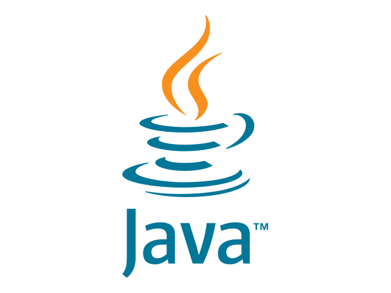
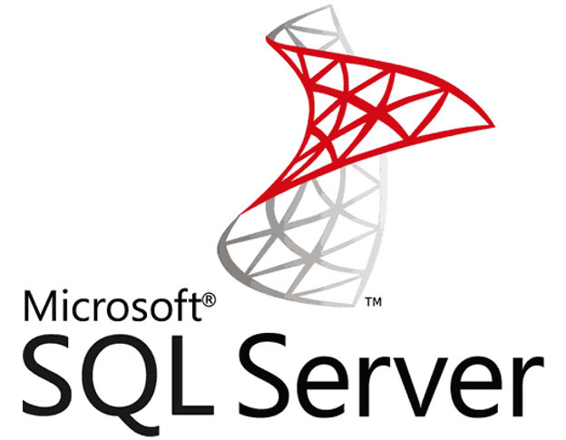
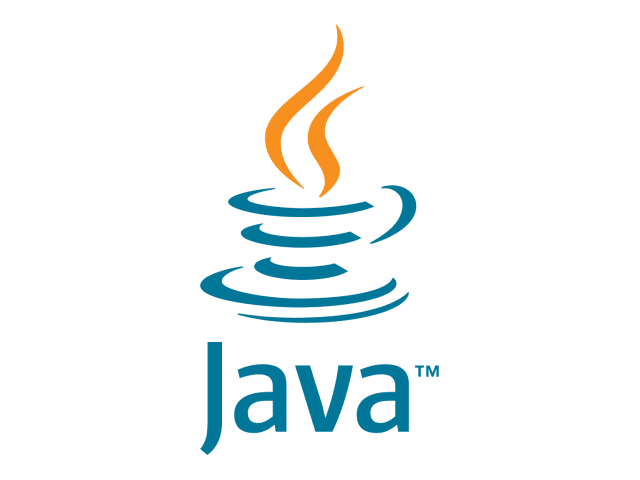
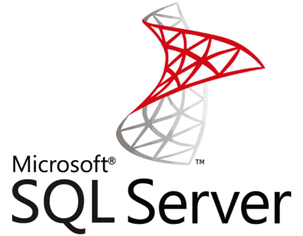

Hello there 👋🏼
I'am JoSam
2nd Year Information System, SAP & Back-End Enthusiast
About Me
Hi, I'm Jonathan Samuel Tanadi, but you can call me Josam. Currently in my second year of Information System studies at Binus University. I am also actively involved as one of the board members in the Bina Nusantara Computer Club (BNCC) , where I contribute to the management and activities of the club.
My main expertise lies in Information System, particularly in enterprise system (SAP) and system analysis. I find joy in solving complex problems and implementing efficient solutions. Besides my primary focus, I also have a keen interest in back-end engineering. I am passionate about learning and adapting to new technologies in the ever-evolving field of information technology.
Technical Skills


 



Other Activities
Ticketing - JakartaXBeauty 2023
Ticketing - Jakarta Fair Kemayoran 2022
Anti Bullying Campaign at SD Tarsisius 2 - 2022
Aksi Peduli Sungai at Sungai BKT - 2023
Kampanye Toleransi Beragama di SD Sang Timur Tomang - 2023